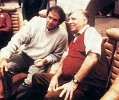
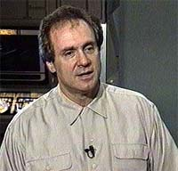
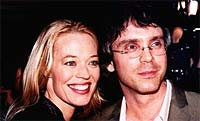
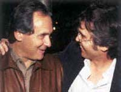

|
A Misteriosa Identidade B&B
 Desde a estria de
Enterprise, h dois anos, um fenmeno no mnimo curioso surgiu nos bastidores de
Jornada nas Estrelas. Duas pessoas perderam sua identidade prpria e se tornaram praticamente uma instituio. Entre os fs, essa entidade com vida prpria acabou sendo conhecida como "B&B" -- uma abreviao de Berman & Braga. Desde a estria de
Enterprise, h dois anos, um fenmeno no mnimo curioso surgiu nos bastidores de
Jornada nas Estrelas. Duas pessoas perderam sua identidade prpria e se tornaram praticamente uma instituio. Entre os fs, essa entidade com vida prpria acabou sendo conhecida como "B&B" -- uma abreviao de Berman & Braga.
Rick Berman est na franquia desde 1986 -- antes mesmo da estria de
A Nova Gerao nos EUA. Ao conquistar a confiana de Gene Roddenberry e atuando tambm como algum simptico aos executivos da Paramount, Berman acabou se tornando o sucessor do Grande Pssaro da Galxia na conduo de todas as coisas de
Jornada nas Estrelas. Nada mau para quem, quando se integrou equipe de
A Nova Gerao, no tinha a menor idia de onde estava se enfiando.
 Berman originalmente tinha um cargo de executivo na Paramount, onde tinha como funo gerenciar os telefilmes e projetos especiais do estdio -- que na ocasio incluam
A Nova Gerao. Depois de participar de uma reunio com Gene e outros executivos, Berman foi convidado pelo criador de
Jornada para um almoo.
"Ficamos por l umas duas horas e no falamos nada sobre Jornada nas
Estrelas. Ele ento me perguntou se eu sabia algo sobre Jornada. Eu disse a ele que realmente no e que eu nunca tinha visto um filme de
Jornada nas Estrelas. Eu disse que tinha visto um par de episdios da srie original", contou Berman recentemente em uma entrevista revista "Dreamwatch".
"Ele ficou fascinado com isso. Ele j tinha contratado umas poucas pessoas -- Eddie Milkis, Bob Justman e Dorothy Fontana -- para essa nova srie, que ele ainda no havia concebido. Ele eram todos de l dos anos 1960 e ele j havia trabalhado com eles antes. Eu estava nos meus 30 e poucos [39, na verdade -- Berman nasceu em 25 de dezembro de 1945] e era algum que no sabia nada sobre Jornada, e ele gostou disso. Eu viajei muito, e ele tambm, e foi sobre isso que ns conversamos."
Aparentemente os dois se deram muito bem, o que levou Gene a pedir que Berman renunciasse a seu posto na Paramount e se tornasse produtor de
A Nova Gerao. Algumas manobras no estdio permitiram a troca de cargo e estabeleceram o incio da relao que levaria passagem do basto na liderana da franquia.
 Na terceira temporada da srie (1989-1990), Gene se afastou definitivamente do trabalho com o dia-a-dia, deixando Berman como principal produtor-executivo do programa. E foi justamente em 1990 que chegou equipe de roteiristas da srie Brannon Braga, 19 anos mais jovem que Berman. Recm-sado da Universidade da Califrnia em Santa Cruz, Braga conseguiu uma vaga como estagirio em
A Nova Gerao. Com premissas ousadas e a facilidade de vender histrias sintentizveis em uma frase -- os chamados "high-concepts", Braga foi galgando as escadas da produo da srie.
Formando uma frtil parceria com o escritor Ronald D. Moore, que havia chegado srie no ano anterior, Braga conseguiu obter as principais "misses" designadas aos roteiristas -- como as de escrever o episdio final,
"All Good Things...", e os dois primeiros filmes da Nova Gerao para o cinema,
"Generations" e "Primeiro Contato". A parceria com Moore ainda rendeu crditos fora da franquia, como no roteiro de "Misso Impossvel 2", com Tom Cruise.
 Com o fim de
A Nova Gerao, Braga foi levado para Voyager e promovido a produtor. Prosseguindo com a ascenso na nova srie, ele no s passou a namorar Jeri Ryan como tambm chegou a produtor-executivo, trabalhando diretamente com Berman na definio dos rumos para a srie -- possivelmente ali foi iniciada a relao simbitica que vemos na dupla atualmente.
Moore, por sua vez, ficou em Deep Space Nine, e teve problemas quando a srie terminou e ele se mudou para
Voyager, ento no incio de sua sexta temporada (1999). Braga no era mais seu parceiro de roteiros, mas seu chefe -- e claramente o favorito de Berman. Desapontado com o que seu trabalho poderia render em
Voyager, Moore abandonou a franquia depois de poucas semanas na srie de Janeway e cia. De sua presena l, resultaram apenas os episdios
"Barge of the Dead" (roteiro) e "Survival Instinct" (apenas a histria).
Durante a ltima temporada de Voyager, havia trs produtores-executivos listados: Rick Berman, Brannon Braga e o recm-promovido Kenneth Biller. O ltimo nunca teve grande expressividade na franquia e acabou conquistando a eminente posio num golpe de sorte: Berman & Braga j comeavam a preparar as bases para
Enterprise e precisavam de algum para "tomar conta" de Voyager em sua temporada final -- claramente o alto-comando da franquia no estava dando muita bola para o modo como essa srie deveria ser concluda.
Enterprise foi concebida para ser a menina dos olhos de Brannon Braga. Berman j havia ajudado na gestao de duas sries de
Jornada nas Estrelas (com Michael Piller, no caso de Deep Space
Nine, e com Piller e Jeri Taylor, no caso de Voyager), mas para Braga a chance de elaborar uma srie da franquia desde a premissa era uma total novidade.
Nas duas concepes anteriores, Berman sempre pareceu dividir as tarefas com os demais escritores em duas frentes. Piller e Taylor concentravam seus esforos no filo criativo, enquanto Rick estaria mais atrelado aos aspectos tcnicos da produo. O forte de Berman claramente no era escrever. Em
A Nova Gerao, ele redigiu apenas dois roteiros, "Brothers" (da quarta temporada) e
"A Matter of Time" (da quinta temporada). Contribuiu ainda, em parceria, com a premissa de outros trs episdios.
Nas outras duas sries que co-criou, apenas contribuiu, tambm em parceria, com premissas (trs em
Deep Space Nine e oito em Voyager), sem redigir um roteiro sequer. Mas com Enterprise tudo parece ter mudado -- olhando de um ponto de vista romntico, poderamos imaginar que finalmente o sisudo Berman teria encontrado em Braga sua "alma-gmea" criativa.
 Ele mesmo defende essa idia em entrevista dada recentemente (acompanhado por Braga, claro) para a revista "TV Guide", onde admite que os dois "se completam". "Brannon e eu tivemos uma relao variada durante os ltimos dez anos. Comeamos comigo sendo o chefe do chefe dele e terminamos comigo sendo parceiro dele, ento a dinmica mudou. Trabalhar com ele em
Enterprise tem sido a coisa mais divertida que j fiz", diz Berman. "Acho que falo por ns quando digo que temos uma paixo maior por essa srie do que pelas outras", complementa Braga.
Os nmeros refletem isso. Onze dos 43 episdios da srie exibidos at aqui so creditados como roteiros de Rick Berman e Brannon Braga -- praticamente uma em cada quatro histrias seria completamente executada, da concepo roteirizao, pela dupla. Alm disso, 17 outros episdios foram escritos com base em premissas ao menos parcialmente engendradas pelos dois. Somando, 27 dos 43 episdios tm ligao direta e declarada com Brannon e Rick. Detalhe: nenhum dos dois tem um crdito individual sequer na srie -- eles sempre aparecem em dupla, com os nomes separados pelo smbolo "&", que no jargo dos crditos da indstria do entretenimento implica que os dois trabalharam em parceria naquele segmento (e no com um rescrevendo o trabalho do outro).
Disso, uma coisa fica clara: existe a real inteno de criar um elo forte e indissolvel entre os dois. Na histria dos grandes artistas e inventores, a poltica no incomum -- John Lennon e Paul McCartney tinham por acordo assinar juntos todas as msicas que compunham, mesmo que algumas delas tivessem sido feitas exclusivamente por um deles; os irmos Grimm, dos contos de fadas, so to conhecidos dessa forma que poucos sabem o nome de cada um; similarmente, os irmos Wright, inventores do avio, chegavam ao ponto de assinar os cheques que emitiam como "Irmos Wright", independentemente de qual dos dois, Wilbur ou Orville, estivesse envolvido no pagamento.
Apesar disso, parcerias dessa natureza so uma novidade absoluta em
Jornada nas Estrelas. Claro, comum vermos roteiros e histrias assinados por mais de uma pessoa (como a j citada dupla Moore & Braga ou, mais recentemente, os bons Mike Sussman
& Phyllis Strong), mas totalmente inusitado que esse emparceiramento se torne uma instituio, como no caso de Berman & Braga.
igualmente atpico que um produtor j h quinze anos no mesmo servio repentinamente descubra que, alm de seus trabalhos habituais, tem tempo para escrever -- e mais, que tenha a mesma disponibilidade que seu outro colega, responsvel pela equipe de roteiristas da srie. Ainda que seja possvel, altamente improvvel que Rick Berman realmente tenha mergulhado tanto na elaborao dos roteiros da srie -- embora seja o que ele diz: "Estive muito mais envolvido na escrita agora".
Uma teoria alternativa plausvel seria a de que Berman foi forado a mergulhar no lado criativo da srie por determinao da Paramount. At onde se sabe, Rick um dos executivos mais prestigiados do estdio, tendo conduzido
Jornada nas Estrelas por quase 20 anos de produo ininterrupta. Pode ser que, para fazer
Enterprise decolar, Berman tenha tambm se comprometido a manter uma postura mais prxima e vigilante com relao srie. Ainda sabemos muito pouco sobre os bastidores da concepo de
Enterprise, mas o prprio Berman j admitiu que teve de falar um bocado para convencer a Paramount a comprar o conceito pr-Kirk e pr-Federao da srie.
Claro, se essa estratgia realmente o que est acontecendo no topo da cadeia alimentar de
Jornada nas Estrelas, ela uma faca de dois gumes. Se por um lado a Paramount estar ciente de que seu querido produtor est fazendo o melhor trabalho possvel no comando da srie, por outro Berman no encontrar nenhum bode espiatrio caso
Enterprise no vingue e traga ndices de audincia ainda mais baixos do que os de
Voyager -- evento que no est muito longe de acontecer, se tudo continuar caminhando na direo atual. Seu nome j estar indissoluvelmente associado ao de Braga; ele no poder simplesmente dizer, " tudo culpa do Brannon".
Em compensao, se Enterprise vingar, ele tambm no poder colher os louros sozinho. Para todos os efeitos, no que diz respeito ao lado televisivo da franquia, Rick Berman & Brannon Braga so uma nica pessoa.

Salvador
Nogueira, jornalista, escreve regularmente
sobre
a nova srie de Jornada nas Estrelas para o Trek
Brasilis
|